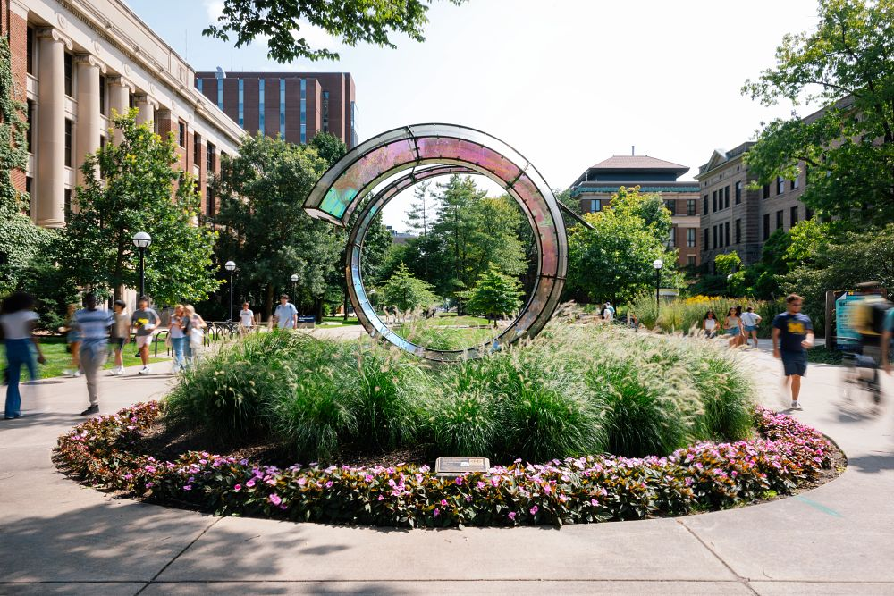

Meet Our Staff
Introduction
Welcome to our Meet the Staff pages -- we hope this information gives you a sense of "who we are" as well as "what we do". Our staff includes fully licensed professional staff in social work and psychology. All CAPS clinicians identify as “generalists” and are comfortable working with issues such as anxiety, depression, eating concerns, family and relationship distress, hostility, substance abuse, and academic concerns, among others. Many of our staff also have specialized interests and expertise, which you can find in their individual biography pages below.
Diverse Staff
CAPS has a diverse staff with regard to race, ethnicity, country of origin, gender, sexual orientation, religious beliefs, age, languages spoken, professional discipline, and intervention approaches that all contribute to providing excellent mental health services for students. See: CAPS Diversity Statement
Contributing to the Campus and Profession of College Student Mental Health
Our staff is active in many ways on campus, as well as regionally and nationally. For a listing of these activities, see our latest Annual Report.
Our staff also contributes to the understanding of college student mental health through peer-reviewed journals and book chapters. See: CAPS Staff Publications.
*Counseling & Psychological Services does its best to assist everyone in our campus community understand mental health issues and the services we provide. Because our primary mission is to treat students with mental health needs, we have to be selective about the types of interviews we can provide and have created the following guidelines.
- We are not able to accommodate class-related interviews and/or projects. Many students are able to find the information they need within our website and our annual reports.
- Requests for media-related interviews:
- We request that you provide the questions you would like to ask in advance.
- Unfortunately, because of heavy demand for services, we aren’t able to provide interviews with short notice. Requests should be submitted at least 72 hours in advance.
- CAPS office is unable to participate in scavenger hunts for students due to maintaining the confidentiality of our clients. However, you are welcome to direct students to the wellness zone, which has a separate entrance adjacent to CAPS. If you have any questions, please feel free to contact the CAPS office.
Staff Categories
- Professional Licensed Staff
- Adjunct Staff
- Post-Degree Clinicians in Training
- Social Work and Psychology Trainees
- Administrative Support Staff